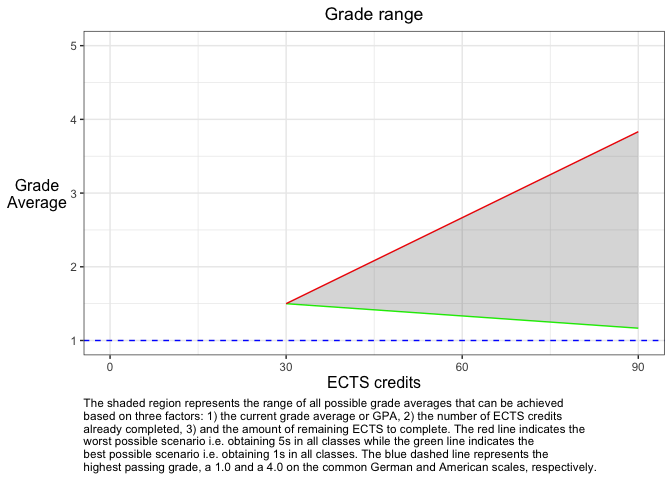

The goal of gradecast is to allow students to calculate a possible range of final grades for their academic program based on their current grades, quantity of completed ECTS points, and the number of remaining ECTS points. The package is designed to be used in a Shiny app, where the user can input their data and see the possible range of final grades in a plot.
Installation
You can install the development version of gradecast from GitHub with:
# install.packages("devtools")
devtools::install_github("NeuroShepherd/gradecast")Example
Calculating Range of Grades
library(gradecast)
# Example of completing 1 semester i.e. 30 ECTS with a 1.5 grade (German)
# and having 60 ECTS left to complete the program. Uses the standard German
# grading scale of 1 to 5 (1 being the best grade and 5 being the worst).
calculate_grade_range(
completed_ects = 30,
current_grade = 1.5,
remaining_ects = 60,
max_passing_grade = 1,
min_passing_grade = 5
)
#> best_outcome worst_outcome
#> 1.166667 3.833333Projection plot
# The results can be projected in a plot
plot_grade_range(
completed_ects = 30,
current_grade = 1.5,
remaining_ects = 60,
max_passing_grade = 1,
min_passing_grade = 5,
caption_width = 95
)
Shiny Application
run_app()Misc: Grade Conversion
The package also provides a function to convert grades between different grading scales, in particular it supports the conversion between the German and US grading scales (affectionaly known as “freedom units” here.)
grade_in_germany <- 1.3
convert_to_freedom_units(grade_in_germany)
#> [1] 3.7